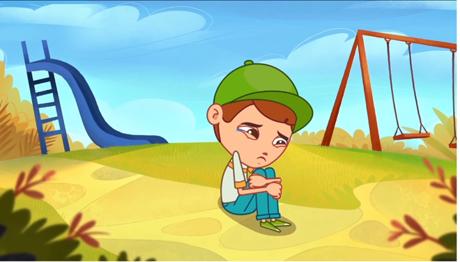

O Brasil faz parte da Parceria Global pelo fim da violência contra crianças e adolescentes que reúne governos, agências da Organização das Nações Unidas (ONU), organizações internacionais, sociedade civil, grupos religiosos, setor privado, fundações filantrópicas, pesquisadores, acadêmicos e crianças. Criada em 2016 com o objetivo de erradicar a violência contra crianças e adolescentes em todos os países, comunidades e famílias do mundo, a Parceria Global conta hoje com 21 países, incluindo agora o Brasil.
Veja as propostas:
|  |
|
No final de janeiro de 2018, 45 organizações da sociedade civil, redes e fóruns que atuam na defesa, promoção e controle social dos direitos de crianças e adolescentes entregaram uma carta a representantes dos ministérios dos Direitos Humanos e do Desenvolvimento Social. Os objetivos da coalizão eram solicitar que o Estado Brasileiro implementasse estratégias sistemáticas, integradas e multissetoriais com absoluta prioridade para pôr fim à violência contra esse público no Brasil; e estabelecesse mecanismos de avaliação e monitoramento dessas políticas.
Mobilização:
Cláudia Sintoni, especialista em mobilização do Itaú Social, uma das entidades da coalizão, a entrada do Brasil na Parceria Global encontrou ressonância nas organizações sociais.
Veja a carta que Pedro Hartung (Advogado defensor do direito das crianças) diz:
“A Coalizão nasceu com esse intuito: mobilizar a agenda nacional para garantir que políticas públicas sejam elaboradas e efetivamente cumpridas com urgência. Outras estratégias estão sendo a mobilização e participação de debates tocando na urgência da temática”.
“O poder desta Parceria Global é mobilizar e engajar governos e líderes mundiais, de diferentes áreas como desenvolvimento, resposta humanitária e de financiamento para uma ação global coletiva, comprometidos no uso de sua atuação e voz, juntamente com o capital político e financeiro para:
Mudar leis e políticas.
Implementar planos de ação baseados em evidências multissetoriais.
Compartilhar lições aprendidas.
Compartilhar responsabilidades.
Completa Cláudia Sintoni:
“As medidas socioeducativas precisam ser garantidas e o Sinase mantido. Estamos nos fortalecendo e fortalecendo várias pautas correlatas. Continuamos em movimento. O significado mais importante é que o Brasil assume um compromisso público e internacional de elaborar políticas públicas pelo fim da violência contra crianças e adolescentes. O fato de estarmos nessa parceria faz com que o país seja acompanhado pelos atores internacionais”.
A movimentação, entretanto, fortaleceu ainda mais as organizações da sociedade civil e vem permitindo atuações complementares à adesão à Parceria.
O Estatuto da Criança e do Adolescente – ECA, em seu artigo 11 preconiza que:
“É assegurado acesso integral às linhas de cuidado voltadas à saúde da criança e do adolescente, por intermédio do Sistema Único de Saúde, observado o princípio da equidade no acesso a ações e serviços para promoção, proteção e recuperação da saúde”.
O Estatuto da Criança e do Adolescente (ECA) - Lei 8.069 de 11 de julho de 1990 – conferiu ao Sistema único de Saúde (SUS) a responsabilidade:
"Por meio da atenção integral à saúde e pressupondo o acesso universal e igualitário aos serviços."
Afim de promover o direito à vida e à saúde.
O Ministério da Saúde (MS) entende que a violência é um grave problema de saúde pública. Esse entendimento se dá em consonância com orientações de organizações internacionais, tal como a Organização Mundial de Saúde. É nesse sentido que foi instituída a Política Nacional de Redução da Morbimortalidade por Acidentes e Violências , e também foi estabelecida a obrigatoriedade da notificação dos casos de violência tendo crianças ou adolescentes como vítimas por meio da ficha de notificação individual.
A garantia dos direitos sociais das crianças e adolescentes tem seu fundamento na Declaração Universal dos Direitos Humanos, elaborada na década de 1940. Pautado na Convenção Internacional dos Direitos da Criança (1989) e na Constituição Federal (1988), o Brasil tem se organizado, especialmente a partir de 1990, para estabelecer o cumprimento dos direitos sociais de seus cidadãos, elegendo o segmento infanto-juvenil como prioritário para o desenvolvimento de políticas e programas. Essa preocupação levou a sociedade civil e a sociedade política à aprovação de uma legislação específica – o Estatuto da Criança e do Adolescente (ECA) – Lei Federal no 8.069, de 13 de julho de 1990, cujo conteúdo baseia-se na Doutrina da Proteção Integral. A promulgação do ECA traz à tona o problema crônico da exclusão social de crianças e adolescentes em relação à garantia de seus direitos fundamentais.
PBH realiza ações para conscientizar população sobre violência contra crianças:
Atividades foram realizadas em diferentes regiões de Belo Horizonte para conscientizar a população sobre o enfrentamento da violência contra crianças e adolescentes.
Nas Regioes:
Noroeste:
Na sede do Conselho Tutelar da Regional Noroeste, teve uma roda de conversa com a rede de atendimento sobre o papel da sociedade, a responsabilização do violador e a importância da ação da Delegacia Especializada de Proteção à Criança e ao Adolescente.
Pampulha:
Na Região da Pampulha, teve uma intervenção com estudantes da Escola Municipal Maria de Magalhães Pinto na Estação do MOVE Pampulha. A proposta é que os próprios estudantes abordem as pessoas, sensibilizando-as com a entrega de informativos e flores amarelas, símbolos da campanha.
Venda Nova:
Na região de Venda Nova, a mobilização ocorre no Centro de Referência de Assistência Social (CRAS) Apolônia. Foram realizadas, durante todo o dia, atividades lúdicas e educativas para as famílias, principalmente aquelas que possuem crianças e adolescentes.
Nordeste:
A mobilização na região Nordeste foi feita, no Centro de Referência de Assistência Social (CRAS) Arthur de Sá. O grupo de Teatro de Mobilização Social apresentou a esquete "O medo e a coragem", levando uma reflexão lúdica sobre o tema para os adolescentes do Projovem, crianças e idosos do Serviço de Convivência e Fortalecimento de Vínculos e demais usuários.
Além de incentivar a denuncia e propagar os meios dela.
Regional Barreiro: 3277-8925
Centro-Sul: 3277-4757
Leste: 3277-4407
Nordeste: 3277-6122
Noroeste: 3277-7168
Norte: 3277-6655
Oeste: 3277-7008
Pampulha: 3277-7970
Venda Nova: 3277-5512
Plantão do Conselho Tutelar: 3277-1912.